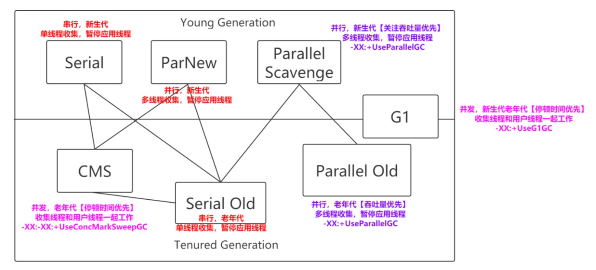
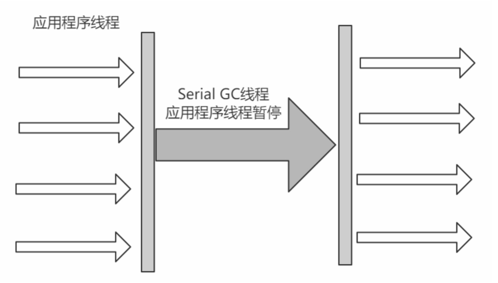
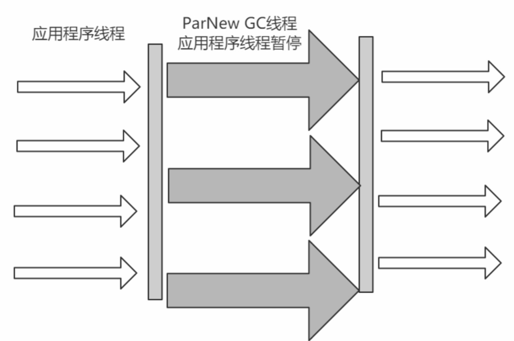
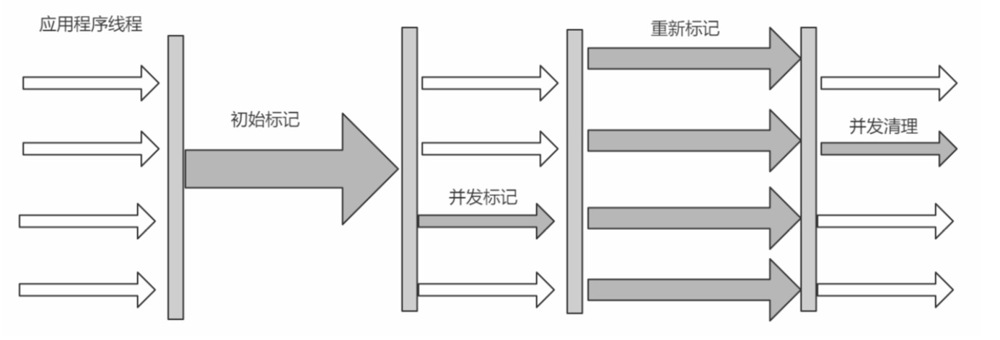
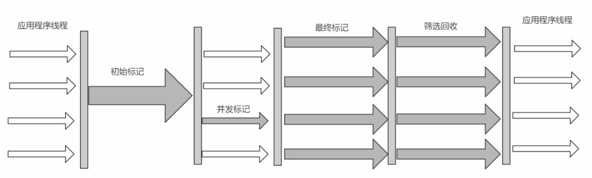
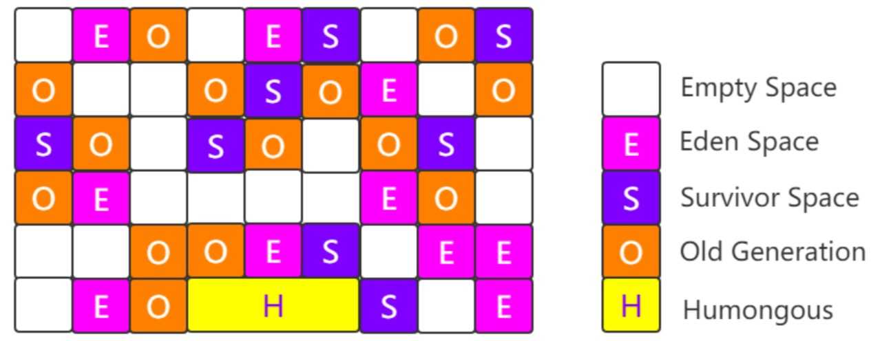

垃圾收集器

并发和并行
并发
GC线程和用户线程同时进行，比如CMS，G1
并行
多线程进行GC，比如ParNew，Parallel Scavenge
Serial
一种新生代单线程收集器，使用的标记-复制算法，在垃圾收集的时候会暂停其他线程。

Serial Old
一种老年代单线程收集器，使用的标记-整理算法，在垃圾收集的时候会暂停其他线程。
ParNew
Serial收集器的多线程版本，一种新生代多线程收集器，使用的标记-复制算法，在垃圾收集的时候会暂停其他线程，且单CPU时比Serial效率差。

Parallel Scavenge
一种新生代多线程收集器，使用的标记-复制算法，在垃圾收集的时候会暂停其他线程，相较于ParNew更注重系统吞吐量。这里的吞吐量是指运行用户代码的时间/(运行用户代码的时间+垃圾收集时间)，显然垃圾收集的时间越短，吞吐量越大，可以通过-XX:MaxGCPauseMillis控制最大的垃圾收集停顿时间或者-XX:GCTimeRatio直接设置 吞吐量大小。
Parallel Old
Parallel Scavenge收集器的老年代版本，一种老年代多线程收集器，使用的标记-整理算法，在垃圾收集的时候会暂停其他线程，相较于Serial Old更注重系统吞吐量。
CMS
一种以获取最短回收停顿时间为目标的收集器，使用的标记-清除算法，共有四步，其中并发标记和并发清除两步，GC线程与用户线程是可以同时进行的，所以CMS是一个并发类收集器。注意，CMS并发GC不是Full GC。
初始标记
只标记GC roots直接关联对象，不顺着链再往下标记，速度快
并发标记
顺着链再往下标记
并发预清理
帮重新标记阶段先做点工作，扫描一下卡表脏的区域和新生代晋升到老年代的对象等
重新标记
修改并发标记后因程序产生的变动，该阶段较为耗时
并发清除
清除对象，回收空间，产生浮动垃圾（留着下次清理）

G1
一种以可预测的停顿(比CMS更先进的地方在于能让使用者明确指定一个长度为M毫秒的时间片段内，消耗在垃圾收集上的时间不得超过N毫秒)为优势的收集器，使用的标记-整理算法，共有四步，前三步与CMS基本一致，不同的是第四步为并发清除，会对各个Region的回收价值和成本进行排序，根据用户所期望的GC停顿时间制定回收计划

G1将整个Java堆划分为多个大小相等的独立区域(Region)，可通过-XX:G1HeapRegionSize设置Region大小，虽然还保留有新生代和老年代的概念，但新生代和老年代不再是物理隔离的了，它们都是一部分Region(不需要连续)的集合，所以不要设置新生代和老年代的大小，只要设置堆大小即可。每个Region大小都是一样的，可以是1M到32M之间的数值，但是必须保证是2的n次幂。如果对象太大，一个Region放不下(超过Region大小的50%)，那么就会直接放到H中
